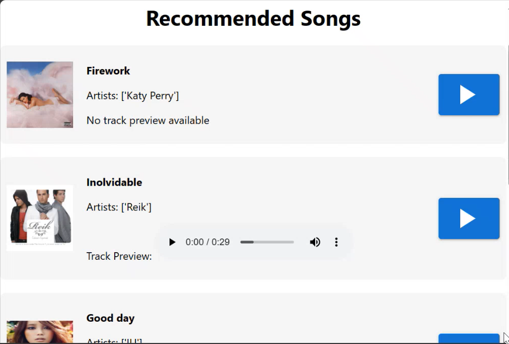

<!DOCTYPE html>
<html>
    <head>
        <meta charset="utf-8">
        <meta name="viewport" content="width=device-width, initial-scale=1.0">
        <title>Iulian Boariu</title>
        <link href='https://fonts.googleapis.com/css?family=Inter' rel='stylesheet'>
        <link href="https://cdn.jsdelivr.net/npm/bootstrap@5.3.3/dist/css/bootstrap.min.css" rel="stylesheet" integrity="sha384-QWTKZyjpPEjISv5WaRU9OFeRpok6YctnYmDr5pNlyT2bRjXh0JMhjY6hW+ALEwIH" crossorigin="anonymous">
        <script src="https://cdn.jsdelivr.net/npm/bootstrap@5.3.3/dist/js/bootstrap.bundle.min.js" integrity="sha384-YvpcrYf0tY3lHB60NNkmXc5s9fDVZLESaAA55NDzOxhy9GkcIdslK1eN7N6jIeHz" crossorigin="anonymous"></script>
        <link rel="stylesheet" href="./style_3.css">
    </head>
</html>

<body>
    <section class="navbar_sect">
        <nav class="navbar navbar-expand-lg bg-body-tertiary navbar-light fixed-top">
          <div class="container-fluid">
            <a class="navbar-brand" href="main.html">Back to Portfolio</a>
          </div>
        </nav>
    </section>

    <section class="proj_desc">
      <div class="px-4 py-5 my-5 text-center">
        <h1 class="proj_title">Melody Match</h1>
        <div class="language">
          <span class="html">HTML</span>
          <span class="css">CSS</span>
          <span class="react">React</span>
          <span class="flask">Flask</span>
        </div>
        
        <h1 class="overview">Overview</h1>
        <div class="container">
          <p class="desc">Application that would recommend the user eight songs based on the preferences they have 
            inputted into the application. When submitted, the recommendation engine built into the backend would return the 
            recommended songs that it has obtained from a dataset and display it on a new page. The user would be able to play
            a preview of each of the songs.
        </p>
        </div>
        <h1 class="features">Features</h1>
        <div class="container">
          <ul class="desc">
            <li><span>Recommendation Engine : </span>Utilizes Machine Learning through the K-Clustering algorithm, which categorized the music.</li>
            <li><span>Recommended Songs : </span>Obtain 8 songs recommended to you based on inputted preferences.</li>
            <li><span>Song Preview : </span>Listen to 30 seconds from a song, can adjust its volume. </li>
          </ul>
        </div>
        <h1 class="github">GitHub</h1>
        <div class="container">
          <a href="https://github.com/iulCode78/Projects/tree/main/MusicProject-main" style="text-decoration: none; color: inherit;">
          <p class="git_button">View</p>
          </a>
        </div>
      </div>
    </section>

    <section class="footer" id="foot">
      <footer>
        <p class="footer_text">© 2025 Iulian Boariu</p>
        <p class="footer_text">All rights reserved</p>
      </footer>
    </section>
</body>